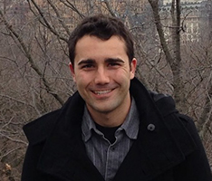
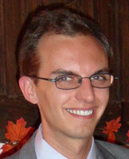
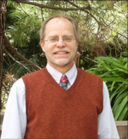

Connor Galleher
Connor Galleher is a third year undergraduate student in Chemical and Biomolecular Engineering at University of California, Berkeley. His research in the Graves lab has focused on practical applications of low temperature ambient gas plasmas. In the past Connor has worked on preventing fruit spoilage with plasma technology. He has also worked with a medical doctor from University of California, San Francisco to develop a disinfection protocol for a material known as LifeWrap, which is used in the developing world to prevent maternal death during childbirth. In addition to the Graves lab, Connor has also performed research at The Scripps Research Institute in San Diego studying the signaling pathways in cells and at the Joint Bio Energy Institute, developing an efficient method to produce high quality biofuels. Connor is a Regents and Chancellor Scholar who anticipates graduating in May 2014

Matt Pavlovich
Matt Pavlovich is a fourth-year graduate student in Chemical Engineering at UC Berkeley. His research in the Graves lab has focused on the basic science and application of ambient-gas plasma disinfection, with a particular interest in characterizing gas- and aqueous-phase chemistry and correlating it to plasma antimicrobial effect. Matt also studies the interaction between plasma species and high-energy photons. He received the Department of Homeland Security's STEM fellowship and anticipates graduating in 2014.

Prof. David B. Graves
The laboratory science behind our technology was performed in the lab of Professor David B. Graves. Professor Graves' research focuses on the physics, chemistry, and technological applications of low-temperature plasma science. Currently, the group focuses on two major areas of research: plasma processing of films and surfaces as it relates to electronics fabrication, and biomedical applications of plasma to bacteria, biomolecules, and mammalian cells.

Prof. Douglas S. Clark
Professor Douglas S. Clark collaborates with Professor Graves on plasma biomedicine projects. Professor Clark researches extremophilic microorganisms, protein engineering for novel environments, and high-throughput enzyme and cell screening technologies.
Other Members
Other team members and collaborators include UC Berkeley students Pritha Hait and Leo Kao (lab testing), Luis Gonzalez (architectural renderings), Vikram Singh (website design), and Brandon Curtis (website hosting and management); Steve Graves (photo credit); and visiting student from Tokyo Tech Toshi Ono and visiting scholar from Comenius University, Slovakia, Professor Zdenko Machala (experimental design and prototype development).
We gratefully acknowledge partial funding from the UC Berkeley Blum Center for Developing Economies and the DOE Plasma Science Center.